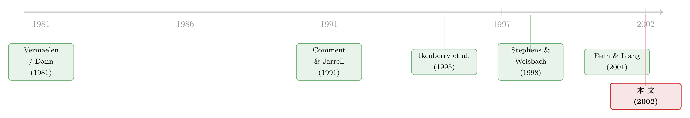

当「回购」不再是回购：公司买回股票，到底为了谁？
本文读的是 Kahle (2002, Journal of Financial Economics)：1990 年代美国公司回购狂潮的背后，藏着一条被传统理论忽略的动机——为员工行权「备货」。当一家公司期权满天飞时，它宣布回购，市场不再像过去那样给 3–4% 的掌声，而只给 1.6%；而且公司里「非高管期权」越多，掌声越小。换句话说，市场学会了分辨：哪些回购是「真信号」，哪些只是一场为期权擦屁股的「假回购」。
1 一个数不对的账
先讲一个让 1990 年代的华尔街分析师百思不得其解的怪现象。
一家公司隆重宣布：我们要拿出几亿美元回购自家股票。按教科书的逻辑，回购意味着流通股 (shares outstanding) 减少，每股价值上升，这是管理层在用真金白银告诉你「我们的股票被低估了」。可几个月后，有人翻开同一家公司的财报，却发现一件荒唐事：股票不仅没少，反而比回购前还多了（The Wall Street Journal, Feb. 10, 1997, p. C1）。
钱花出去了，股数却不降反升。这笔账，怎么算都对不上。
传统的两套理论在这里集体失语。第一套是 信号理论 (signaling theory)：回购是管理层向市场释放「公司被低估」的私人信息——Vermaelen (1981) 和 Dann (1981) 早就记录下，回购公告日前后有 3–4% 的异常正收益 (abnormal return)。第二套是 自由现金流假说 (free cash flow hypothesis)：回购把闲钱还给股东，缓解代理冲突（关于这套逻辑的源头，可参见《现金为什么一定要「还」出去？——四十年后，重读 Jensen 的自由现金流》）。
但这两套理论都解释不了 1990 年代那场回购的「大爆发」。论文里的数字触目惊心：1996 年，创纪录的 1,475 家公司宣布要回购 $177 billion 的股票；而 1992 和 1993 两年加起来，也不过 600 家公司、不到 $40 billion。短短几年，回购的规模翻了好几倍。
是什么点燃了这把火？
2 真正的嫌疑人：员工手里的那一摞期权
接着，一个自然的问题是：1990 年代到底发生了什么新变化，能同时解释「回购暴增」和「股数不降反升」？
Kahle 把矛头指向了同一时期另一件疯长的东西——股票期权 (stock options)。ShareData 的数据显示，员工持股期权计划在这十年里迅速铺开；据 Strege (1999)，股票期权和授予的总价值从 1992 年的 $8.9 billion 飙到 1997 年的 $45.6 billion。而在标普 Execucomp 数据库里，高管手中未行权 (outstanding) 和可行权 (exercisable) 的期权数量，这几年也翻了三倍。
期权和回购，几乎是手拉手一起暴涨的。这不像是巧合。
于是论文提出了两个并不互斥的假说，把「期权」和「回购」勾连起来：
第一个是 期权融资假说 (option-funding hypothesis)。逻辑很朴素：员工要行权，公司就得有股票交给他们。与其增发新股稀释每股收益 (EPS)，不如在二级市场把股票买回来，再转手交给行权的员工——一买一卖，流通股净额不变，基本 EPS 的稀释就被悄悄抹平了。这正好解释了那个对不上的账：回购的股票，被行权「吃」掉了，所以股数才不降反升。
为什么公司要这么在意 EPS？在传统公司金融框架里，这种「化妆术」式的报表变化本不该重要——重要的只有现金流。但实务界普遍相信分析师和投资者盯着 EPS 和 EPS 增长看。论文举了个鲜活的例子：微软在分析师的敦促下，宣布恢复回购，专门用来填补公司庞大的员工期权池、对冲潜在稀释（The Wall Street Journal, Aug. 8, 2000, p. B6）。
第二个是 替代假说 (substitution hypothesis)。这一条专门针对高管。期权的价值与未来分红负相关（除非期权有股利保护，而据 Murphy (1998)，只有 1% 的 CEO 期权有这种保护）。也就是说，分红会侵蚀管理层手里期权的价值，回购却不会。所以持有大量期权的高管，会更倾向于用回购、而不是增加分红，来分配多余的现金——因为回购对他们的钱包友好得多。
两个假说指向同一个结果（回购替代分红），却来自完全不同的人群：一个是为全体员工的行权备货，一个是为高管自己的财富最大化。这就引出了全篇真正关键的一步。
3 真正关键的一步：把期权「切成两半」
前人也想过期权和回购的关系，但他们栽在了同一个坑里——分不清这两个假说。
Bartov et al. (1998) 用 Compustat 里「为期权转换保留的普通股」（data item #215）来代理高管期权；Jolls (1998) 用上一年的期权授予来代理员工期权。可这些代理变量都不靠谱：Kahle 指出，#215 这个变量与她手工收集的高管期权之间，相关系数还不到 0.30；而上一年的授予，因为有多年归属期 (vesting period)，也不是「当前可行权」的好度量。
真正关键的一步，是 Kahle 干了一件笨功夫但极有价值的事：她手工把期权切成了两个维度的四块。
- 一个维度是「谁持有」：高管期权 vs. 非高管（员工）期权。她把从年报里收集的全体员工期权，减去 Execucomp 里的高管期权，就得到了非高管期权。
- 另一个维度是「能不能行权」：可行权 (exercisable) vs. 不可行权 (unexercisable)。
有了这把「四格尺」，两个假说终于能被分开称重了：
- 如果是期权融资在起作用，那么驱动回购的应该是全体员工的可行权期权（这些是马上要变成股票的）。
- 如果是替代效应在起作用，那么高管期权应该提供超出员工期权之外的、额外的回购激励——而且无论可行权还是不可行权都该如此，因为分红对两者的价值都有伤害。
这正是这篇论文的核心贡献：不是去问「期权重不重要」，而是去问「是谁的期权、哪一种期权，在什么环节起作用」。
4 数据
讲清楚了思路，来看证据落在哪些数据上。
回购样本来自 证券数据公司 (Securities Data Corporation, SDC) 的并购数据库，取 1991 年 1 月 1 日到 1996 年 12 月 31 日所有原始公告日的公开市场回购，初始 5,147 笔。一路用 CRSP（要求有收益数据）、Execucomp（要求公告前一年、当年、后一年都有高管期权数据）、Compustat（账面权益、自由现金流、总资产）筛下来，再加上需要手工翻 10-K 年报收集全体员工期权——最终样本是 712 笔回购。
为了比较「选回购还是选加分红」，她还另收了一个 分红增加 (dividend-increasing) 的对照样本：从 1,038 个分红增加的公司-年里随机抽五分之一，得到 205 个观测。
回购样本逐年递增：1993 年 72 笔、1994 年 177 笔、1995 年 208 笔、1996 年 255 笔——与那场回购狂潮的节奏完全吻合。
这里有一个识别上的诚实之处值得点出：回购和期权都是内生 (endogenous) 的。公司可能因为同一批不可观测的原因，既发期权又搞回购。Kahle 没有回避这一点，而是用了多种方法控制内生性（联立方程、工具变量等），并报告结果在这些处理下依然稳健。但这终究不是一个干净的外生冲击——这一点我们留到最后再评。
5 主要结果：三个环节，三种面孔
现在把论文的发现，按「回购的一生」三个环节摊开来看。
第一个环节，要不要回购（相对于加分红）。 Kahle 发现，当 总可行权期权（占流通股的百分比）高、且近期有大量期权被行权时，公司更可能宣布回购。这支持期权融资假说。但反转出现了：即便控制住了「总期权」，回购决策依然正向依赖于高管期权的多少。把期权拆成可行权和不可行权后，回购决策与总可行权期权正相关、与总不可行权期权无关；可高管的不可行权期权却对回购决策有正向作用。
这说明什么？说明两件事同时为真：公司确实在为员工行权备货（融资动机），但除此之外，如果分红会伤害管理层的财富，公司就更倾向于回购（替代动机）。两个假说，都对。
第二个环节，决定回购之后，到底买多少。 这里出现了一个漂亮的「分工」。Kahle 发现，回购更可能发生在规模大、市净率 (market-to-book) 低、自由现金流高、资本开支低的公司。高管期权会提高「要不要回购」的概率——可一旦决定回购，实际回购的股数（占权益市值的比例）只取决于总可行权期权。高管期权、不可行权期权，都不再有额外的解释力。回购公告后流通股的减少，同样只与总可行权期权正相关。
换句话说：高管期权管的是「开不开枪」，员工的可行权期权管的是「打多少发子弹」。一旦扣下扳机，老板自己那点小算盘就不再说了算——决定回购量的，是全体员工那一摞马上要变成股票的可行权期权。
第三个环节，市场怎么反应。 这是全篇最有冲击力的一击。如果有些回购只是为了给期权备货，那么在有效市场里，它们就不该享有「低估信号」那 3–4% 的待遇。Kahle 算出，她样本的回购公告期异常收益只有 1.6%，明显低于前人记录的 3–4%。更关键的是，公告收益与非高管期权 (nonexecutive options outstanding) 显著负相关——在控制了公司规模、回购比例、前期股票收益、是否分红、自由现金流等因素之后，这个负向关系依然成立。
公司里普通员工的期权越多，市场就越觉得「这场回购多半是为了填期权的坑」，于是掌声越稀。市场学会了分辨真假回购。
（这与另一篇论文的味道恰好互补：《宣布回购，却又不回购——一个不带任何承诺的好消息，凭什么值 3%？》 问的是「公告本身为何有价值」，而 Kahle 这篇问的是「价值为何被期权稀释」。)
6 一个被忽略的政策含义
然后，论文还顺手敲打了一下学术界常用的一个度量。
Stephens and Weisbach (1998) 早已指出，公告的回购计划只有一小部分真正落地，因此提出了若干「实际回购量」的替代度量（关于回购究竟怎么「下手」执行，可参见《买回自己的股票，他们到底怎么「下手」？——一扇被披露制度关上的门》）。Kahle 的结果给这件事添了一条警告：估计「实际回购量」时，必须考虑公司是不是有一大堆期权——因为期权行权会同时往回灌股票，单看流通股的净变化会严重低估真实的回购规模。
更广的一层含义是：把回购一律当作「低估信号」，在 1990 年代很可能被高估了。投资者在为一笔回购鼓掌之前，最好先弄清楚它背后的动机——这，正是论文标题那句「When a buyback isn't a buyback」的全部分量。
7 文献脉络
把这条线索捋一捋，能看清这篇论文站在哪里。
最早，是 Vermaelen (1981) 和 Dann (1981) 立下的实证基石——回购公告有 3–4% 的正收益，并由此长出了信号理论。接着，Comment and Jarrell (1991) 发现公告收益与回购比例正相关、与近期股价负相关，进一步坐实了信号解释；Ikenberry, Lakonishok and Vermaelen (1995) 则把视野拉长，发现「更可能因低估而回购」的公司，公告后四年有高达 45.3% 的异常收益。
然后，研究的重心从「公告」转向「执行」：Stephens and Weisbach (1998) 揭示，只有一部分宣布的回购真正发生，且管理层会相机而动。与此同时，另一条支线开始追问期权与支付政策的关系——Bartov et al. (1998)、Jolls (1998)、Weisbenner (1999)、Guay and Harford (2000)、Fenn and Liang (2001) 各执一词，有的支持替代假说，有的找不到高管期权的作用，分歧的根源恰恰在于代理变量不准、两个假说混在一起拆不开。

Kahle (2002) 的位置，就是用「手工收集 + 四格切分」的笨功夫，把这团乱麻解开：她证明了期权融资和替代效应同时存在，分别主导回购的不同环节，并第一次把这种动机变化「翻译」进了市场反应里。
8 评论与延伸（Q&A + 研究方向）
(a) 几个可能的疑问
Q：期权融资假说和替代假说，听起来都说「期权多就回购」，到底差在哪？
差在「谁的期权」和「为什么」。期权融资讲的是全体员工的可行权期权——回购是为了给行权备货、避免增发稀释 EPS，是一种「备货」逻辑。替代假说讲的是高管的期权——分红会贬损高管期权价值，所以他们偏好用回购代替分红，是一种「自利」逻辑。Kahle 的关键证据是：决定回购量的只有员工可行权期权（融资），而高管期权只影响要不要回购（替代）。
Q：1.6% 这个偏低的公告收益，会不会只是样本期不同造成的，而非期权的功劳？
这正是论文小心处理的地方。它不是只比了一个平均数，而是在横截面里直接检验：在控制规模、回购比例、前期收益、分红、自由现金流之后，公告收益与非高管期权显著负相关。也就是说，低收益不是整体平移，而是期权越多的公司收益越低——这把「期权稀释了信号」从一个时间趋势，落成了一个横截面的因果暗示。
Q：回购和期权都是公司自己选的，这种内生性会不会让结论站不住？
会是隐忧，但作者承认并处理了。她用了多种控制内生性的方法（联立、工具变量等），报告结果稳健。不过坦白说，这里没有一个外生冲击——没有哪条法律突然给某些公司多发了期权。所以结论更接近「强相关 + 机制自洽」，而非干净的因果识别。
Q：为什么公司不直接增发新股给员工行权，非要绕一圈去市场回购？
论文给了几条理由：增发会稀释管理层自己的持股比例；公司可能有目标资本结构，增发会偏离；增发往往需要增加授权股本，而这要股东投票、在某些州还有税务影响。但最被强调的，还是避免基本 EPS 稀释——尽管在传统框架里这只是「化妆术」，实务界却真的在乎。
Q：那「替代假说」里，为什么连高管的不可行权期权都重要？
因为分红会同时贬损可行权和不可行权期权的价值（期权价值与未来分红负相关）。所以只要高管手里握着期权——哪怕还没到归属期——他都有动机用回购代替分红来保住期权价值。这正是 Kahle 用「不可行权期权也显著」来区分替代与融资的巧妙之处。
Q：这篇 2002 年的论文，对今天还有意义吗？
有，而且方法论上的告诫尤其长寿：不要把回购一律读成「低估信号」，要先看公司的期权与薪酬结构。今天股权激励更普遍、回购规模更大，「为期权备货」的逻辑只会更强，而非更弱。
(b) 几个可能的研究问题与提案
1. 期权回购动机在信用市场的镜像。
【经济故事】回购把现金还给股东（和期权持有人），对债权人是潜在的财富转移。如果一部分回购其实是「为高管期权服务」，那么债券市场会不会比股票市场更早、更负面地定价这类回购？「假回购」可能意味着更弱的现金流纪律和更强的内部人自利。 【可行性】中。需要把回购公告匹配到 TRACE 的公司债日内价格，叠加 Execucomp 的期权数据，做债券层面的事件研究。识别仍受内生性困扰，但「期权强度」可作为横截面切分变量。
2. 外资持有人会不会「看穿」假回购？
【经济故事】如果市场整体能分辨真假回购（公告收益随非高管期权下降），那么不同类型的投资者「看穿」的速度可能不同。外资机构信息劣势的说法由来已久（可参见《外资真有「信息劣势」吗？——首尔交易簿里那 37 个基点的真相》），那么面对「期权驱动型回购」，外资是更容易被名义信号误导，还是反而更冷静？ 【可行性】中。需要持股变动数据（如 13F 或某国交易所的国籍标签）匹配回购公告与期权强度，比较不同投资者在公告窗口的交易方向。
3. 强制费用化之后，替代动机消失了吗？
【经济故事】2004 年后 FAS 123R 要求期权费用化，大幅改变了期权的会计与发放激励。Kahle 的两个动机里，「替代」依赖高管期权价值、「融资」依赖 EPS 稀释焦虑。费用化冲击恰好可以拆解：如果回购对高管期权的敏感度在改革后下降，说明替代动机被削弱。 【可行性】高。这是一个相对干净的准自然实验，断点清晰，数据（Execucomp + SDC + Compustat）现成，是一个 doable 的双重差分设计。
4. 「股数不降反升」能否直接量化为一个错配指标？
【经济故事】论文用轶事点出「回购后股数反升」，但没把它做成一个连续指标。可以构造「回购金额 vs. 流通股净变化」的缺口，作为「期权抵消强度」的度量，再去预测长期收益与未来 EPS 管理行为。 【可行性】高。所需变量都在 Compustat/CRSP 里，构造直接，难点在于把期权行权流量干净地剥离出来。
9 我的判断
这篇论文的贡献，不在于发明了什么新理论，而在于一种诚实的「拆解」：当别人用粗糙的代理变量把两个假说搅成一锅时，Kahle 愿意去翻 712 份 10-K，把期权按「高管/员工 × 可行权/不可行权」切成四块，从而第一次让「期权融资」和「替代」各自显形。它对市场反应那一击——公告收益随非高管期权下降——尤其漂亮，把一个动机故事落成了可检验的定价含义。标题本身就是一篇好论文该有的样子：用一句话点破一个被忽视的事实。
对识别，我仍有两点保留。其一，回购与期权的内生性无法靠当年的计量手段彻底洗净——我们看到的是一个机制自洽的强相关，而非外生冲击下的因果。其二，样本止于 1996 年，恰在期权费用化之前；2004 年后的世界里，发期权的成本变了，结论是否还成立是个开放问题（这也正是上面第 3 个提案的由来）。
我接下来最想看到的，是把这套「拆解期权动机」的尺子，接到费用化改革这个准自然实验上，再延伸到债券市场——看看当「假回购」被识别出来时，付出代价的到底是被稀释信号的股东，还是被悄悄转移了财富的债权人。那才是这条线索真正没讲完的下半场。
参考文献
Bartov, E., Krinsky, I., Lee, J. (1998). Evidence on how companies choose between dividends and open-market stock repurchases. Journal of Applied Corporate Finance 11, 89–96.
Comment, R., Jarrell, G. (1991). The relative signaling power of Dutch-auction and fixed-price self-tender offers and open-market share repurchases. Journal of Finance 46, 1243–1272.
Dann, L. (1981). Common stock repurchases: an analysis of returns to bondholders and stockholders. Journal of Financial Economics 9, 113–138.
DeAngelo, H., DeAngelo, L., Skinner, D. (2000). Special dividends and the evolution of dividend signaling. Journal of Financial Economics 57, 309–354.
Fenn, G., Liang, N. (2001). Corporate payout policy and managerial stock incentives. Journal of Financial Economics 60, 45–72.
Guay, W., Harford, J. (2000). The cash flow permanence and information content of dividend increases vs. repurchases. Journal of Financial Economics 57, 385–416.
Ikenberry, D., Lakonishok, J., Vermaelen, T. (1995). Market underreaction to open market share repurchases. Journal of Financial Economics 39, 181–208.
Ikenberry, D., Vermaelen, T. (1996). The option to repurchase stock. Financial Management 25, 9–24.
Jolls, C. (1998). Stock repurchases and incentive compensation. Unpublished working paper, NBER.
Kahle, K. M. (2002). When a buyback isn't a buyback: open market repurchases and employee options. Journal of Financial Economics 63, 235–261.
Murphy, K. (1998). Executive compensation. In: Ashenfelter, O., Card, D. (Eds.), Handbook of Labor Economics, Vol. 3. North-Holland, Amsterdam.
Stephens, C., Weisbach, M. (1998). Actual share reacquisitions in open-market repurchase programs. Journal of Finance 53, 313–333.
Vermaelen, T. (1981). Common stock repurchases and market signaling: an empirical study. Journal of Financial Economics 9, 139–183.
Weisbenner, S. (1999). Corporate share repurchases in the mid 1990s: what role do stock options play? Unpublished working paper, Federal Reserve Board.